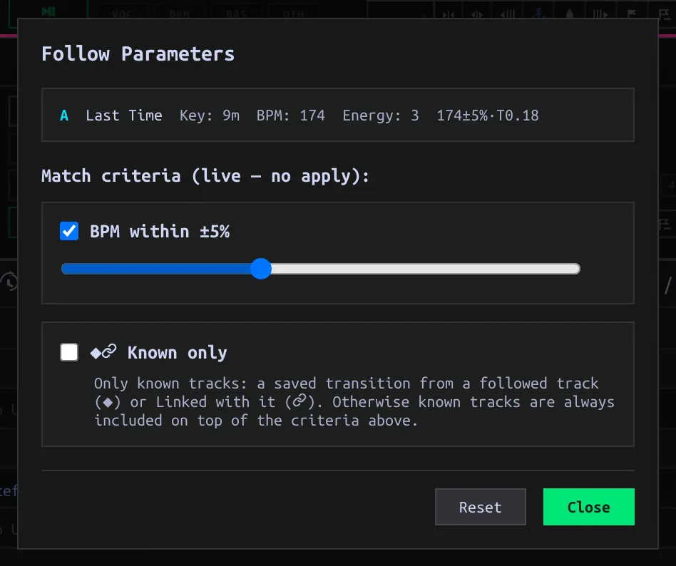

Follow loaded Tracks
Keep candidate next Tracks in the browse list while Decks change.
On this page
Start following
- Load a Track onto a Deck. In the browse filter bar, find ◎ A B C D and click that Deck’s letter; an empty Deck’s letter is unavailable. The letter adopts its Deck color when on. Follow uses the loaded Track as its reference, never the selected table row.
- Read the resulting list: Following holds the loaded reference Tracks already in the visible list; Known evidence rows come next, followed by Compatible candidates. Load another Track onto the followed Deck to update the candidate list without re-entering a search. Toggle the letter off to stop following it.
- Turn on a second Deck’s letter to combine candidates for both loaded Tracks. Once Follow is on, starting playback on another Deck follows that playing Deck; pausing a Deck while another plays removes it as a reference. When all Decks pause, the last followed Deck remains. Playback never turns Follow on when all letters are off.

Follow intersects the other Library filters. If the list looks unexpectedly short, clear manual search/Tag/Key/Energy/BPM filters, or use Clear All (which also turns Follow off). A Playlist has its filter funnel off by default; enable the funnel to see filtered Follow results there. In split view Follow applies to the lower full-Library pane, not the Playlist above.
Set the candidate rules
Click the sliders button next to the Deck letters to open Follow parameters. The reference title, Key, BPM and Energy displayed there describe the loaded Tracks; they are not editable in this popup. Changes take effect immediately, without an Apply button.

| Setting | Effect |
|---|---|
| BPM within ±5% | The default gate for heuristic Compatible Tracks; change the 0–15% tolerance or uncheck it. Half/double-time BPMs can qualify. If the reference has no BPM, this gate does not apply to that reference. |
| Known only | Show only known relationships, rather than metadata-scored Compatible candidates. It is useful when you want previously saved connections, not guesses. |
| Reset | Restore BPM gate on at ±5%, Known only off, Temperature zero. Close keeps current choices. |
Key, shared Tags, artist and Energy affect Compatible ranking, not independent checkbox gates. A Compatible candidate needs enough key/Tag/artist affinity and, with the BPM gate on, an acceptable tempo. No Key or Tags means fewer positive signals, not a penalty. The manual Keys button in the normal filter bar is a different, explicit Key filter.
Read the evidence
| Row group | Evidence in the current list |
|---|---|
| ★ Favorited transition | A saved, favorited Transition out of the reference Track. |
| 🔗 Linked | A manually linked Track pair; symmetric in either direction. |
| ◆ Saved transition | A saved Transition out of the reference, not favorited. Direction matters: B→A does not establish A→B. |
| Compatible | Metadata heuristic: key, Tags and shared artist give affinity; BPM and Energy influence score/order. The score is not a saved mix or a guarantee that the Tracks work together. |
Known rows can appear outside the heuristic BPM range, but still have to survive any manual Library filters. Current Follow does not surface unpromoted Takes as an Observed row. Saving a Transition or linking a pair is the way to add explicit Known evidence; simply loading or playing together does not create a Link.
Change the exploration order
The Compatible group’s TEMP slider starts at 0 (descending Match score). Increasing it samples a score-weighted order without changing admission, displayed scores or Known row order. Reroll requests a new order at nonzero Temperature. Selecting another column sort overrides Temperature’s ordering within Compatible; select the Match score column to return to it. Clear All clears Follow itself, but does not reset Temperature—use Reset in Follow parameters for that.